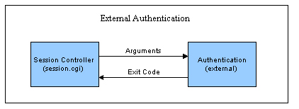

使用外部身份验证或绕过身份验证程序
概述
默认情况下，当 Urchin 会话控制器 (session.cgi) 调用位于 Urchin 安装的"bin"目录下的"auth"二进制程序时，就会执行 Urchin 身份验证。此二进制程序会查询配置数据库，并将所提供的用户名和密码与存储在此配置中的同类信息进行比较。会有一个表示状态是成功还是失败的退出代码传回会话控制器。只要对配置进行一项更改，即可控制身份验证二进制程序的位置。本模块化设计可让管理员调用外部身份验证程序，而不是调用默认的"auth"二进制程序。

如上图所示，此外部身份验证程序可执行所需的任何身份验证函数，其中包括 LDAP 和其他数据库调用。只要执行程序的用户与执行"urchinwebd"（Urchin 的 Apache 网络服务器）的用户是同一人，并且与输入/输出要求相符，即可非常方便将 Urchin 修改为使用不同形式的身份验证。
指定身份验证例程
要配置"会话控制器"所调用的身份验证例程，请修改位于 Urchin 安装中的"etc/session.conf"文件。这个文件中所包含的可配置参数控制了"会话控制器"的行为，包括进行身份验证时应调用的例程。请修改此行：
AUTHENTICATION: ../bin/auth
以您的身份验证例程路径替换"../bin/auth"。请确认身份验证例程可由执行"urchinwebd"的同一用户执行。
对输入/输出的要求
"会话控制器"调用身份验证例程时，会传递用户名、密码以及用户的远程 IP 地址，作为命令行的参数，如下所示：
argv[1] = username
argv[2] = password
argv[3] = remote_addr
外部身份验证例程可选择忽略这些参数中的任何或所有参数。不过，一般的身份验证例程至少会使用前两个参数。执行所需的任何或所有身份验证过程后，例程的退出代码若等于 0，表示身份验证成功；代码若是 -1，则表示失败。
Exit Code
0 = successful authentication
-1 = authentication failed
上述身份验证界面可让管理员以非常简单的方式对验证用户登录信息的例程进行自定义。
绕过身份验证程序
使用上述技术可有意绕过 Urchin 身份验证程序。如果托管提供商希望使用整个 Urchin 系统来控制用户和组，却又已经在用户到达 Urchin 时进行了身份验证，则可绕过身份验证程序以避免二次登录问题。只要主机能确保对 Urchin 系统的访问受控于身份验证入口，而且用户名不会受到篡改，主机就可以使用下列技术绕过身份验证程序。
要绕过身份验证步骤，请创建退出代码永远为 0 的虚拟外部身份验证例程。例如，perl 代码可能如下所示：
#!/usr/bin/perl
exit(0);
修改"etc/session.conf"文件并使其指向上述虚拟身份验证例程，这么一来就可以将"会话控制器"指向此例程。接下来只需提供一个链接即可，如下所示：
http://hostname:9999/session.cgi?action=login&user=paul
修改上述链接，使其指向实际的主机名和端口；然后修改用户，以指向所需的用户名或变量。虚拟身份验证例程会自动审核此登录信息。使用此方法时请务必小心，避免发生安全问题。
Windows 用户请注意：
为了在未安装 Perl 的 Windows 环境中提供类似功能，可使用 Urchin 支持网站"助手脚本"区域中提供的简易 noauth.exe 二进制程序。此二进制程序就是一个"无操作"文件，只是在被调用时返回成功状态。实施此解决方案前，一定要了解可能的安全问题。